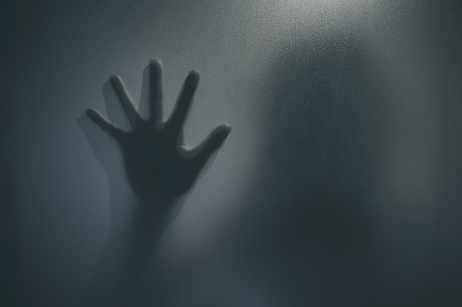
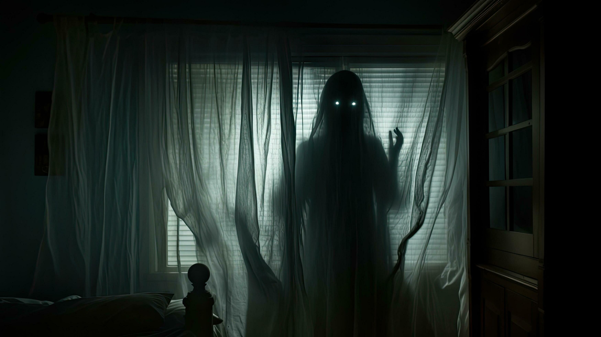
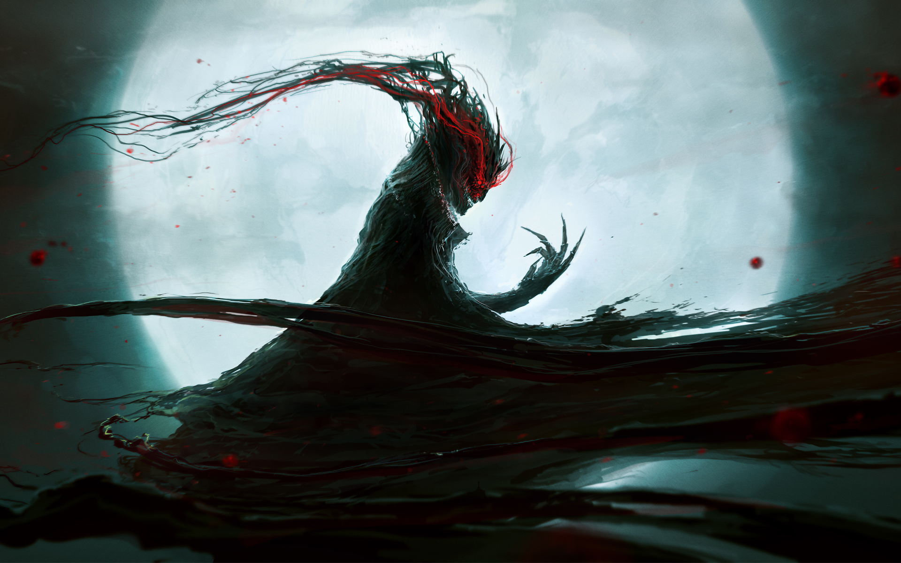
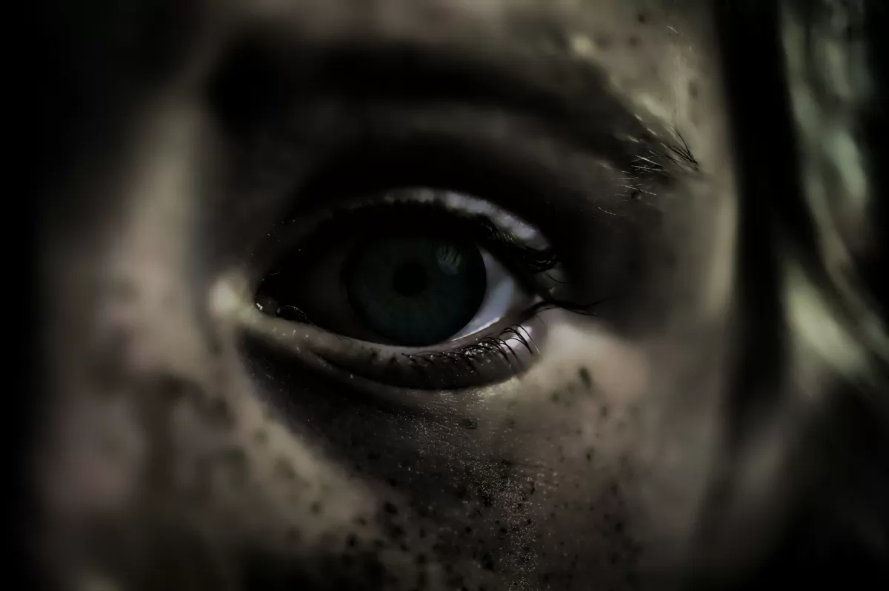
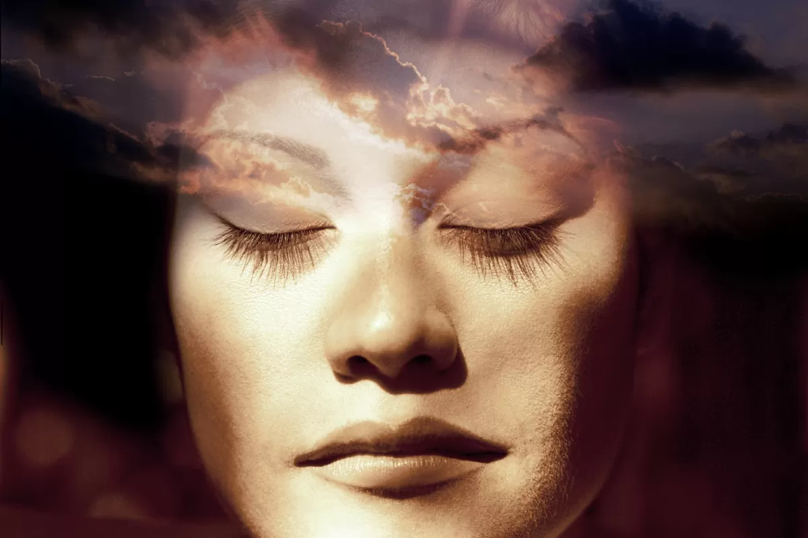

| |
Haunted Places | Paranormal Activities | Exorcisms & Possessions | Social Platforms | Horror Movies | Common Signs | Contact Us |
|---|
Paranormal
This term commonly applied to experiences or events that seem unusual or unnatural. Those who experience paranormal events often attribute them to magical, supernatural, or folkloric origins while disregarding the steps normally taken to attain rational scientific explanations. Because of this, many paranormal subjects are considered to be in the realm of pseudoscience.
Many people claim to have had paranormal experiences that cannot be explained by normal scientific means. Ghost sightings are among the examples of paranormal events that many people claim to have had. In addition, many otherwise rational people believe in the existence of paranormal abilities such as psychic premonitions, telekinesis, and telepathic communication.
Psychology: The truth about the paranormal
Soon after World War II, Winston Churchill was visiting the White House when he is said to have had an uncanny experience. Having had a long bath with a Scotch and cigar, he reportedly walked into the adjoining bedroom – only to be met by the ghost of Abraham Lincoln. Unflappable, even while completely naked, Churchill apparently announced: “Good evening, Mr President. You seem to have me at a disadvantage.” The spirit smiled and vanished.
His supposed contact with the supernatural puts Churchill in illustrious company. Arthur Conan Doyle spoke to ghosts through mediums, while Alan Turing believed in telepathy. Three men who were all known for their razor-sharp thinking, yet couldn’t stop themselves from believing in the impossible. You may well join them. According to recent surveys, as many as three quarters of Americans believe in the paranormal, in some form, while nearly one in five claim to have actually seen a ghost.
Intrigued by these persistent beliefs, psychologists have started to look at why some of us can’t shake off old superstitions and folk-lore. Their findings may suggest some hidden virtues to believing in the paranormal. At the very least, it should cause you to question whether you hold more insidious beliefs about the world.

Some paranormal experiences are easily explainable, based on faulty activity in the brain. Reports of poltergeists invisibly moving objects seem to be consistent with damage to certain regions of the right hemisphere that are responsible for visual processing; certain forms of epilepsy, meanwhile, can cause the spooky feeling that a presence is stalking you close by – perhaps underlying accounts of faceless “shadow people” lurking in the surroundings.
Out-of-body experiences, meanwhile, are now accepted neurological phenomena, while certain visual illusions could confound the healthy brain and create mythical beings. For example, one young Italian psychologist looked in the mirror one morning to find a grizzled old man staring back at him. His later experiments confirmed that the illusion is surprisingly common when you look at your reflection in the half light, perhaps because the brain struggles to construct the contours of your face, so it begins to try to fill in the missing information – even if that leads to the appearance of skulls, old hags or hideous animals.
So any combination of exhaustion, drugs, alcohol, and tricks of the light could contribute to single, isolated sightings, like that reported by Churchill. But what about the experiences of people like Conan Doyle, who seemed to see other-worldly actions on a day-to-day basis?
Some Examples of Supernatural and Paranormal Phenomena
Many experiences fall within the realm of the paranormal and supernatural. By definition, a supernatural or paranormal phenomenon is an event or entity that defies explanation in terms of the typical human experience. Supernatural examples include ghosts, cryptids, telekinesis, and other forms of psychic powers or paranormal entities. It is something that science can't explain; at least not yet. Discover some of the most common types of paranormal phenomena.
Ghosts
Ghosts might be considered the grand-daddy of paranormal experiences. Everyone has some level of curiosity about what happens when they die. Is there really life after physical death? Are spirits capable of communicating with the living? Some people believe so, and some desperately hope it's true. Wherever you stand on the topic, many people have reported seeing misty apparitions of human forms, some familiar and others unknown.
Current parapsychological theory holds that a ghost's pure consciousness exists as energy and is able to communicate through extrasensory perceptions such as clairaudience and clairvoyance. Interestingly, it is believed that the creatures that exist in this supernatural realm are not necessarily dead, but rather can be the consciousness of anyone, living or dead, that is currently disembodied. In other words, a living human who is having an out of body experience or astral projection may appear to someone else as a ghost.

Elementals
A group of otherworldly beings referred to as "elementals" are often thought of as ghosts, but because they are not spirits of people who have previously lived, they are not considered "ghosts." Elementals are nature spirits or etheric spirits believed to be mythical; however, people have reported experiencing or seeing them. This category includes (but isn't limited to):
- Fairies
- Elves
- Gnomes
- Goblins
- Tree people
- Earth or nature spirits
- Spirites
Lore suggests elemental spirits are essential for creating, sustaining, and renewing life on earth, and they have supernatural abilities that help them with these tasks.
Demons
Opinions are split about whether demons actually exist. Some people misperceive spirit activities from ghosts as being demonic activity, but there is a theoretical difference between the two. Demonology is a popular paranormal topic. There are many in the paranormal community who have dedicated their paranormal careers to demonology.
From a faith-based perspective, there is a widespread belief that demons are fallen angels who become the minions of Satan; however, many modern paranormal researchers dismiss this idea. Instead, they believe that what is thought to be a demon is really just an angry ghost or a misunderstood spirit. Many believe that people retain their personalities from life into the afterlife, and a demon may just be a person who was not very nice in life and is continuing on in the afterlife.
The Roman Catholic church remains among the foremost experts on demons, and the church still trains priests as experts who assist people believed to be possessed by demons by performing exorcisms.

Poltergiests
Poltergeist phenomena is one of the most misunderstood types of supernatural activity, according to parapsychologists. Poltergeists are often referred to as "noisy ghosts," and their activity includes moving of objects, opening and closing of doors, and many other odd phenomena.
Within paranormal realms, poltergeist hauntings are often the most feared because they can be terrifying and even violent. Many are surprised to learn that parapsychologists believe poltergeists have nothing to do with haunts or dead people, as parapsychologist Loyd Auerbach explains in an interview with LoveToKnow. According to Auerbach, poltergeist activity is actually a manifestation of psychokinetic energy from a living human who is likely unaware they are causing the activity.
Hauntings
Hauntings are supernatural experiences that are typically attached to a location. They can involve ghosts, but this isn't always the case. In parapsychological research, a haunting is something popularly referred to as a residual haunting. It's activity that involves a scenario repeating itself over and over in a given location at a general time of day like you're watching a supernatural re-run of a TV program. This differs from the term "ghost" or "apparition" because a haunting is a replay of energy that doesn't have any intelligence, while a ghost or apparition is an apparently intelligent and interactive event.
Black-Eyed Kids
One type of potential supernatural creature that is currently scaring the heck out of people is that of black-eyed kids. These youth appear normal, except they are said to have eyes of pure black, and they appear to people stating they are in distress and in need of assistance. People encountering them report feeling terror when they appear.

Psychic Ability
There are several types of psychic abilities that exist, from mediumship (the ability to communicate with the dead) to the various "clairs" that include:
- Clairvoyance - psychic seeing
- Clairaudience - psychic hearing
- Clairsentience - psychic knowing
- Clairolfaction - psychic smelling
- Clairgustance - psychic tasting
- Clairtangency - psychic feeling/touching
Also included in psychic abilities are empathy (experiencing someone else's feelings as your own), psychometry (receiving psychic information from touching objects), telepathy or ESP (psychic communication), and animal communication. Many organizations, including the Society for Psychical Research (SPR) are conducting ongoing research into this phenomena.

This is only a small sampling of things that can be considered supernatural and paranormal phenomena. With the current level of paranormal research, science may soon find answers to many unexplained phenomena. Until then, they represent how much humanity still has to learn about the universe.
Some Paranormal Research Websites
Beyond The Veil |
||
|---|---|---|
|
Explore the unexplained and discover mysteries that challenge the ordinary. |
||
|
||
|
|